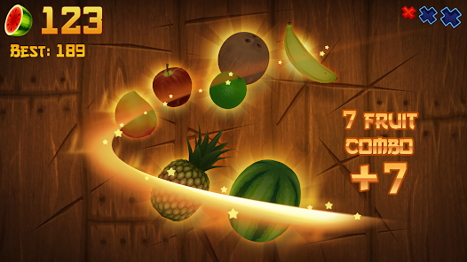
Cortar fruta game
Juego de frutas que van siendo lanzadas y el jugador se encarga de cortarlas, evitando los objetos que no son frutas.
Curso de Interacción Humano-Computador
Documentamos cómo pasamos de una lista de ideas sueltas a un juego de supervivencia en realidad virtual: linterna, puertas y una amenaza que se guía por el sonido.
Ver el proceso ↓Mueve el cursor
Parte 1
Cinco pasos, del brainstorming individual a las reglas de interacción del juego final.
Cada integrante del equipo propuso un concepto de juego por su cuenta, sin filtrar nada todavía.

Juego de frutas que van siendo lanzadas y el jugador se encarga de cortarlas, evitando los objetos que no son frutas.
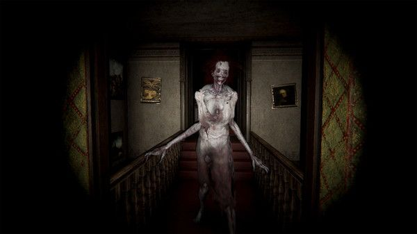
Juego en el que una persona debe estar atenta al movimiento de distintos robots con el objetivo de sobrevivir.
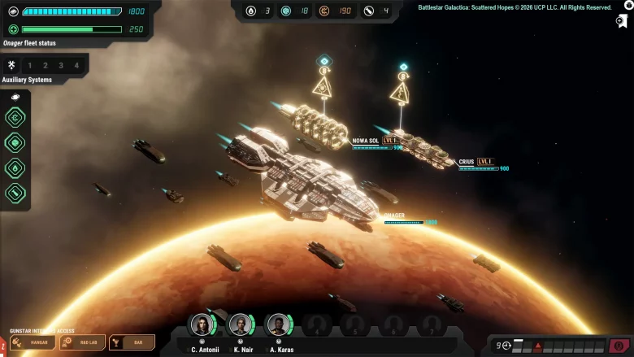
Juego de estrategia donde comandas una flota armada para eliminar a la flota enemiga en un entorno virtual.
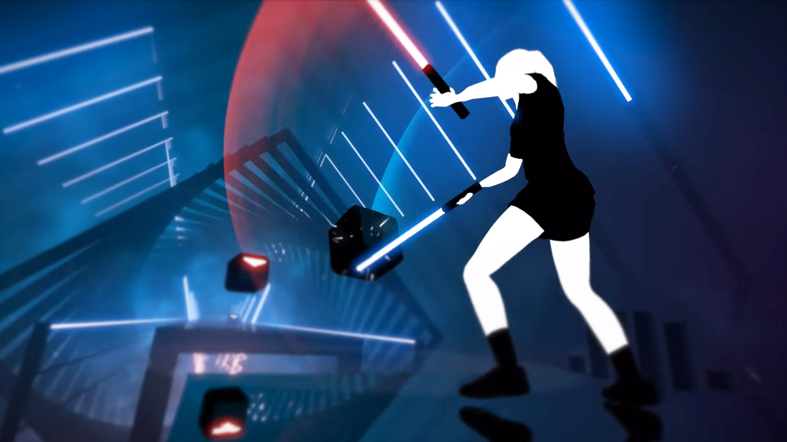
Juego de reacción y ritmo musical, cuyo objetivo es eliminar objetivos al ritmo de la música.
Revisamos las cuatro propuestas y sacamos lo que se repetía: todas giraban en torno a reaccionar rápido ante una amenaza con información limitada. De ahí salieron los puntos que definieron el diseño.
Sobrevivir una noche en un espacio limitado, con amenazas que irán a acecharte.
El juego se apoya en mecánicas de sonido, luces y movimiento, con retroalimentación audiovisual y atención dividida: el jugador debe moverse, escuchar y revisar distintos lugares al mismo tiempo para seguir con vida.
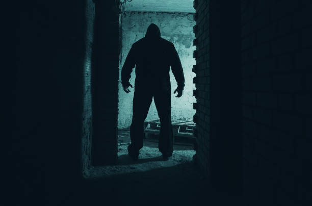
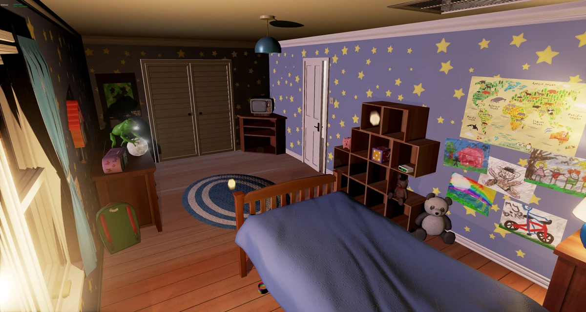
El jugador puede encender o apagar la linterna para iluminar zonas oscuras y detectar enemigos. También sirve para ahuyentarlos.
Se pueden abrir o cerrar para comprobar si hay algún enemigo al otro lado, evitar el encuentro o enfrentarlo directamente.
El jugador debe mantenerse atento a cualquier movimiento fuera de la oficina, ya que los enemigos aparecen y se desplazan por los alrededores.
Hay que aguantar hasta el amanecer, a las 6am, sobreviviendo el tiempo suficiente para salir victorioso.
Abrir y cerrar puertas.
Encender y apagar la linterna.
Interactuar con objetos de la oficina y usar elementos del entorno para evitar o ahuyentar enemigos.
Escuchar sonidos extraños para ubicar a los atacantes.
Parte 2
Cuatro etapas: del primer boceto del cuarto en Unity hasta la versión final con el monstruo y sus mecánicas de ataque.
Desarrollamos una primera versión del cuarto en Unity para definir el espacio donde transcurre la noche: la cama, la ventana y la puerta, que son los puntos por donde llegará la amenaza.
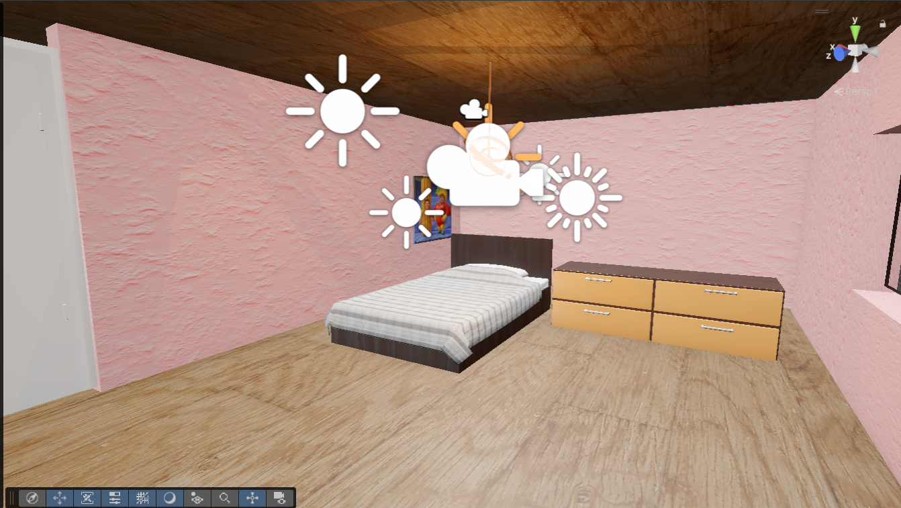
Primera vista del cuarto.
Escogimos un monstruo del Asset Store de Unity que encajara con el tono del juego, para enfocar el tiempo en las mecánicas en lugar de modelarlo desde cero.
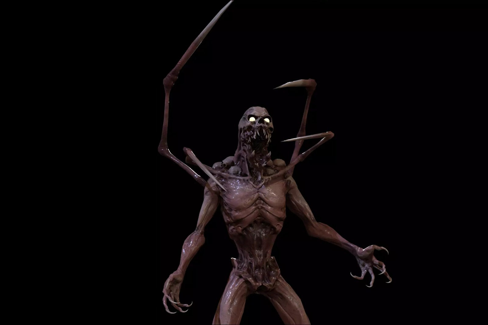
Monstruo seleccionado de los assets de Unity.
Desarrollamos tres formas de ataque: debajo de la cama, por la ventana y por la puerta. Para espantarlo, el jugador debe iluminarlo con la linterna bajo la cama y cerrar la puerta y la ventana a tiempo.
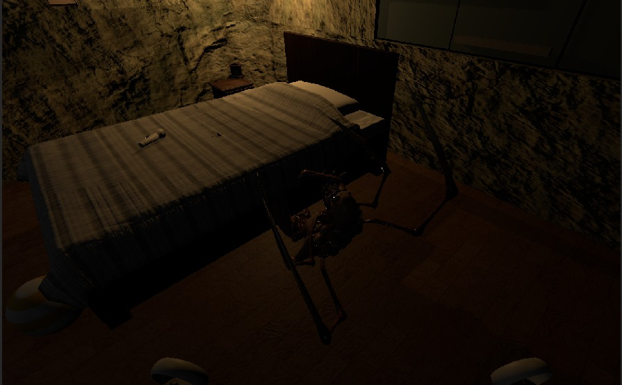
Debajo de la cama: se ahuyenta iluminándolo con la linterna.
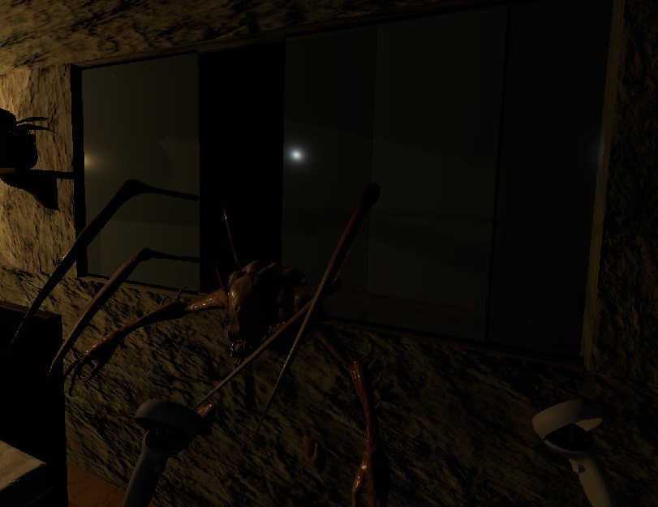
Ventana: se evita cerrándola.
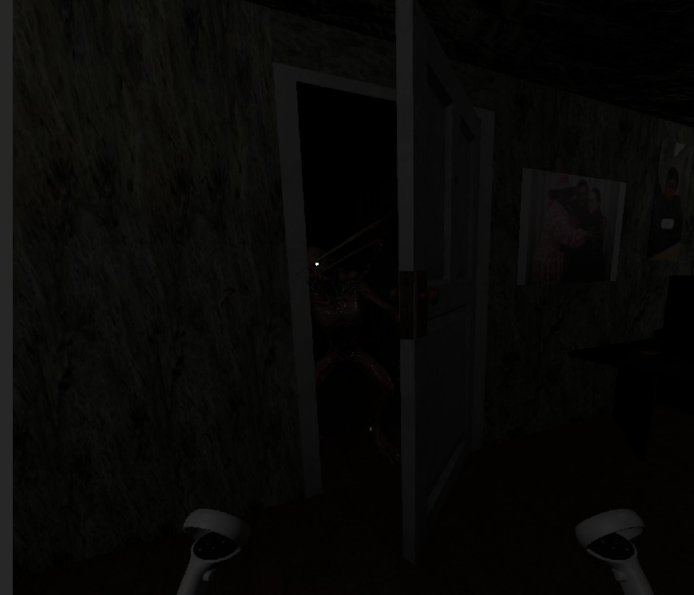
Puerta: se evita cerrándola.
Con las mecánicas funcionando, terminamos la versión final del cuarto: ambientación, iluminación y detalles listos para las pruebas con usuarios.
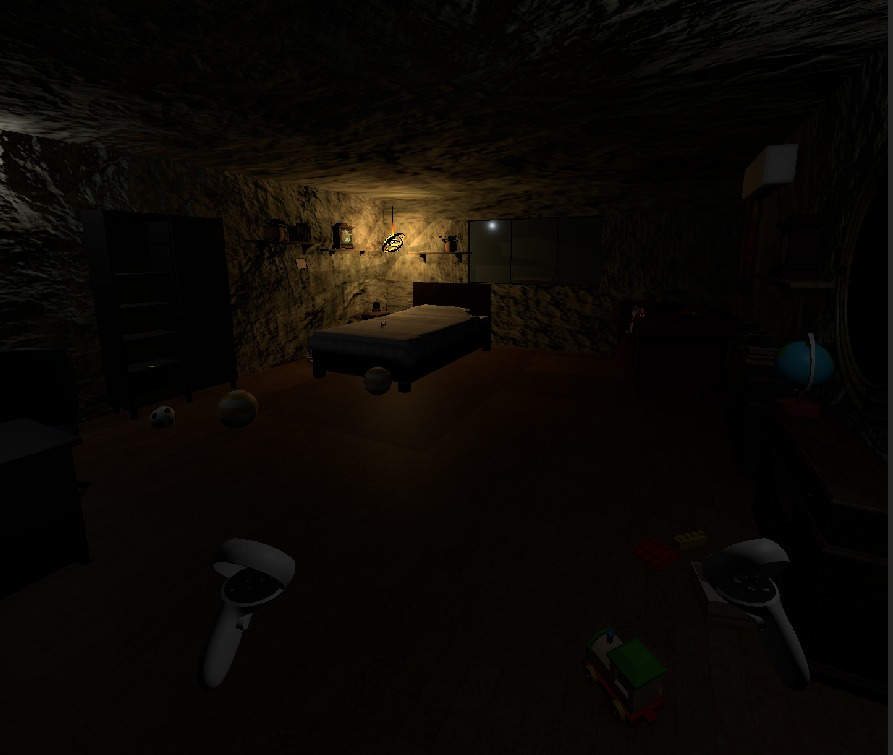
Versión final del cuarto.
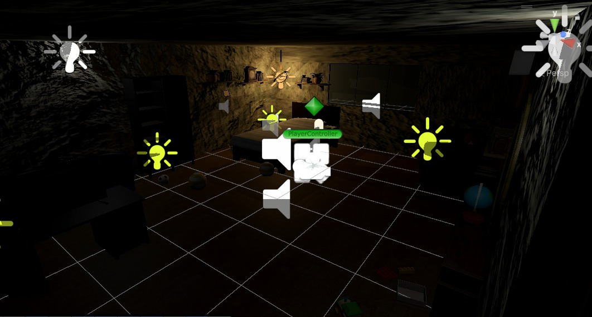
Otra vista de la versión final.
Parte 3
Grabamos a distintos usuarios probando el juego en VR y les pedimos su opinión al terminar.
Cada prueba se enfocó en un aspecto distinto de la experiencia.
Videos de las pruebas junto con la opinión de cada usuario.
Usuario 1
Usuario 2
Usuario 3